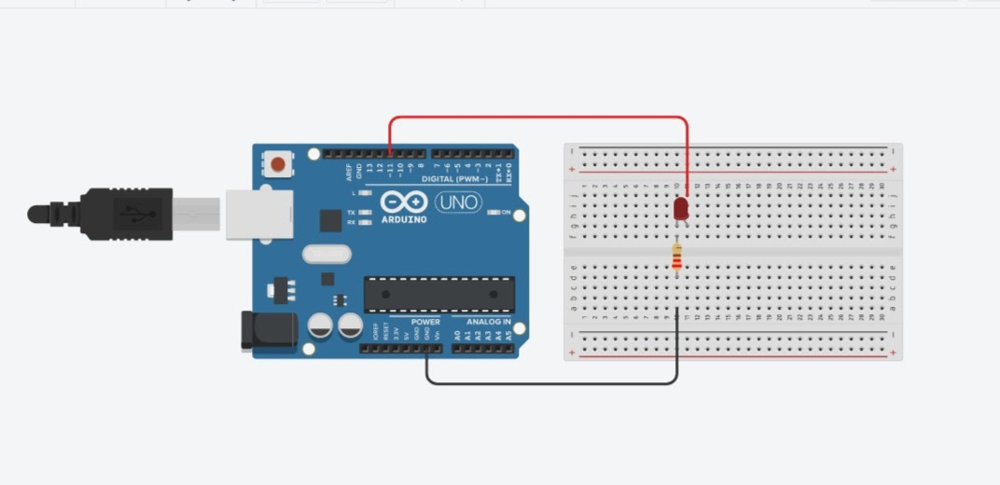
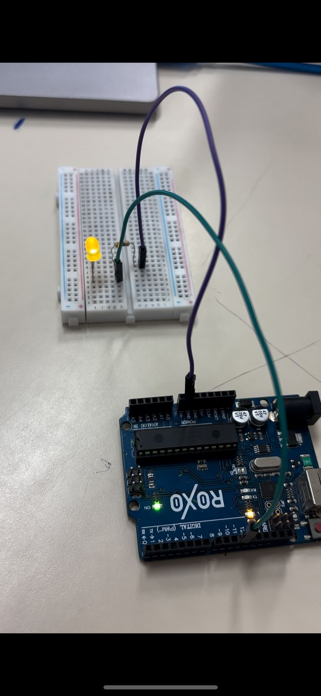
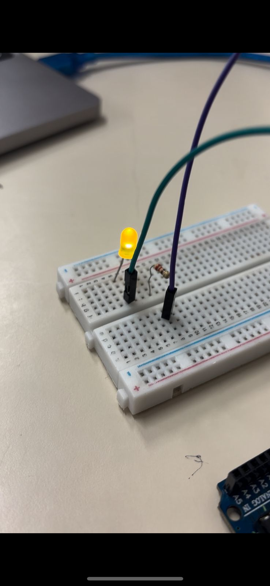
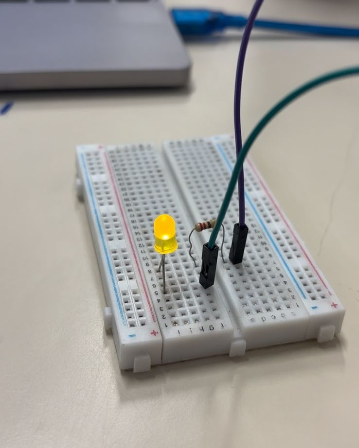

Efeitos Fade-in e Fade-out na Acessibilidade Visual
Os efeitos fade-in e fade-out são animações visuais utilizadas em interfaces digitais para tornar as transições entre elementos mais suaves e confortáveis. O fade-in faz com que um objeto apareça gradualmente na tela, enquanto o fade-out faz com que ele desapareça de forma progressiva. Embora sejam frequentemente utilizados por motivos estéticos, esses efeitos também desempenham um papel importante na acessibilidade, especialmente para pessoas com baixa visão, sensibilidade visual ou dificuldades de percepção.
Quando um elemento surge ou desaparece de maneira instantânea, o usuário pode não perceber a mudança, principalmente se possuir alguma limitação visual. Com o uso do fade-in e do fade-out, o cérebro tem mais tempo para identificar a alteração na interface, facilitando a localização de botões, menus, imagens e mensagens importantes. Isso reduz o esforço visual e melhora a experiência de navegação.
Além do ambiente digital, esse conceito também pode contribuir para a percepção de objetos no mundo real. Pessoas com baixa visão frequentemente necessitam de um tempo maior para localizar e reconhecer objetos ao seu redor. Transições suaves, contrastes graduais e mudanças menos bruscas ajudam o cérebro a direcionar a atenção para um determinado ponto, tornando mais fácil identificar obstáculos, portas, degraus, placas ou outros elementos importantes durante a locomoção.
Em aplicações voltadas à acessibilidade, como sistemas educacionais, mapas interativos, assistentes virtuais e interfaces para pessoas com deficiência visual, os efeitos de fade-in e fade-out podem indicar mudanças de estado sem causar desconforto. Por exemplo, quando uma informação aparece gradualmente ao mesmo tempo em que é narrada por voz ou acompanhada por um intérprete virtual de Libras, o usuário consegue acompanhar a informação de forma mais natural.
Entretanto, é importante que essas animações sejam utilizadas com equilíbrio. Transições muito lentas podem tornar a navegação cansativa, enquanto animações excessivas podem distrair ou causar desconforto em alguns usuários. Por isso, recomenda-se utilizar efeitos rápidos e discretos, normalmente entre 200 e 500 milissegundos, oferecendo uma experiência mais confortável sem comprometer a agilidade da interface.
Dessa forma, os efeitos fade-in e fade-out vão além da estética. Eles são recursos que aumentam a acessibilidade, melhoram a percepção visual das mudanças na interface e podem auxiliar pessoas com dificuldades visuais a identificar informações e objetos com maior facilidade, contribuindo para uma navegação mais segura, intuitiva e inclusiva.
1 Unidade
1 Unidade
2 Unidades
1 Unidade (cor à sua escolha)
220 Ω

A imagem acima apresenta a montagem do circuito desenvolvida no Tinkercad. Nela é possível visualizar a ligação entre o Arduino UNO, o LED, o resistor de 220 Ω e os jumpers utilizados para realizar o efeito Fade-In e Fade-Out utilizando PWM.
Acessar Projeto no Tinkercad
/* Define a porta PWM 11 como pino do LED. */
int pinoLed = 11;
int incremento = 1;
int brilho = 0;
void setup() {
pinMode(pinoLed, OUTPUT);
}
void loop() {
for (brilho; brilho <= 256; brilho += incremento) {
analogWrite(pinoLed, brilho);
delay(100);
}
}
/*******************************************************/
/* Aula 20 - LED Fade-Out */
/*******************************************************/
int pinoLed = 11;
int decremento = 5;
int brilho = 255;
void setup() {
pinMode(pinoLed, OUTPUT);
}
void loop() {
for (brilho; brilho >= -1; brilho -= decremento) {
analogWrite(pinoLed, brilho);
delay(50);
}
}
// LED ligado ao pino 11
const int led = 11;
int brilho = 0;
int incremento = 1;
void setup() {
pinMode(led, OUTPUT);
}
void loop() {
analogWrite(led, brilho);
brilho += incremento;
if (brilho <= 0 || brilho >= 255) {
incremento = -incremento;
}
delay(30);
}


